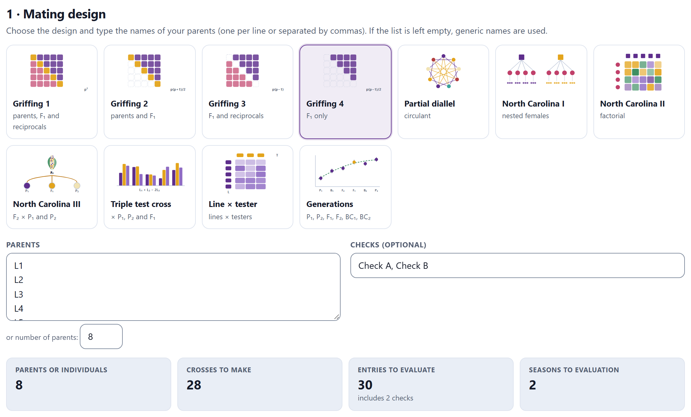
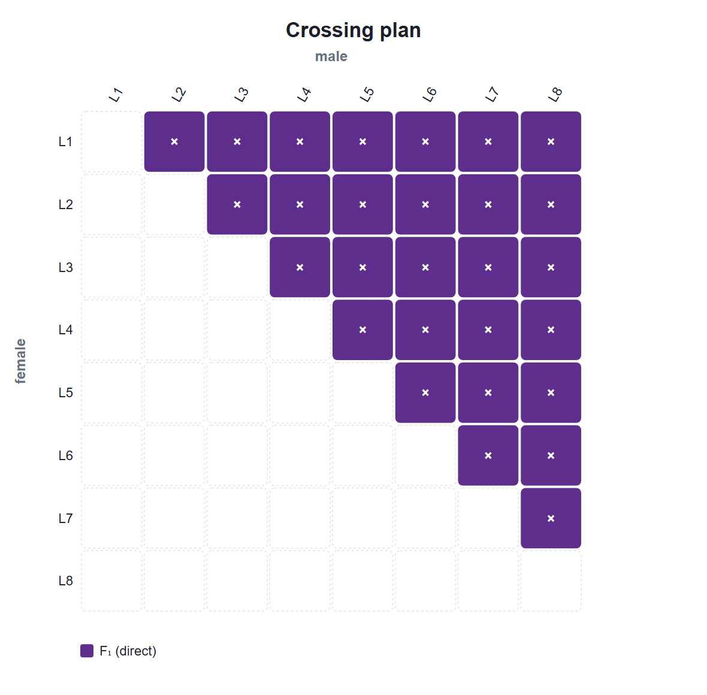
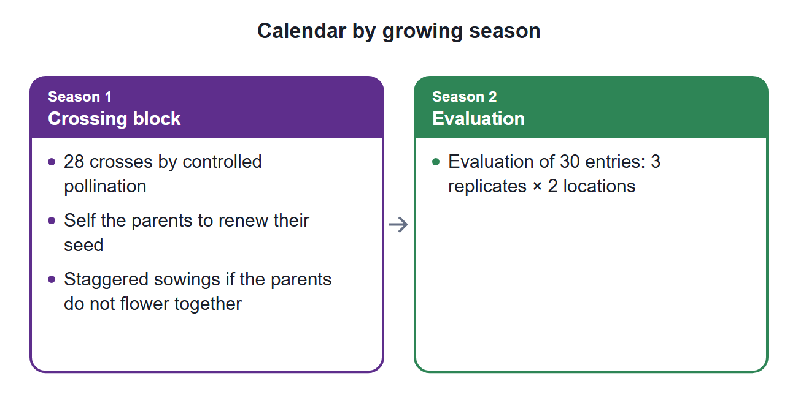
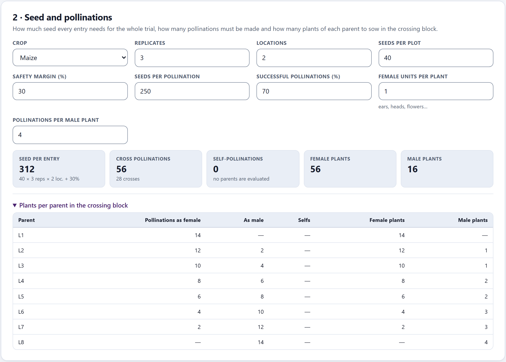
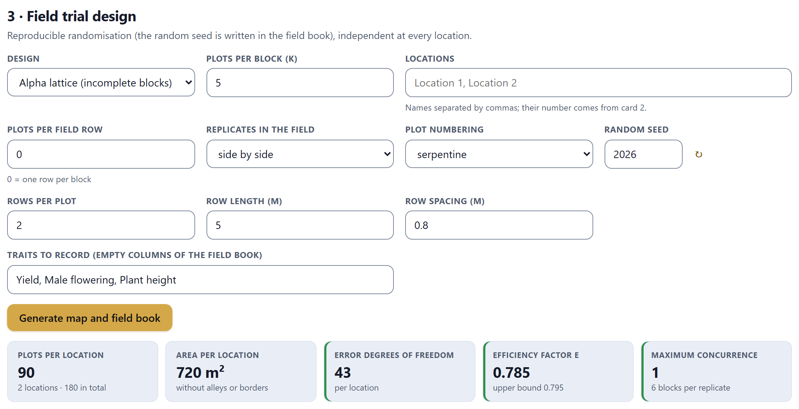
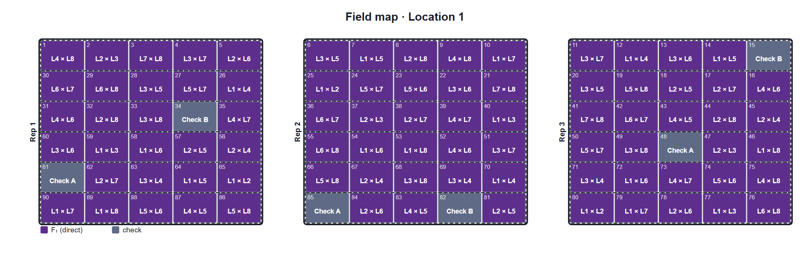
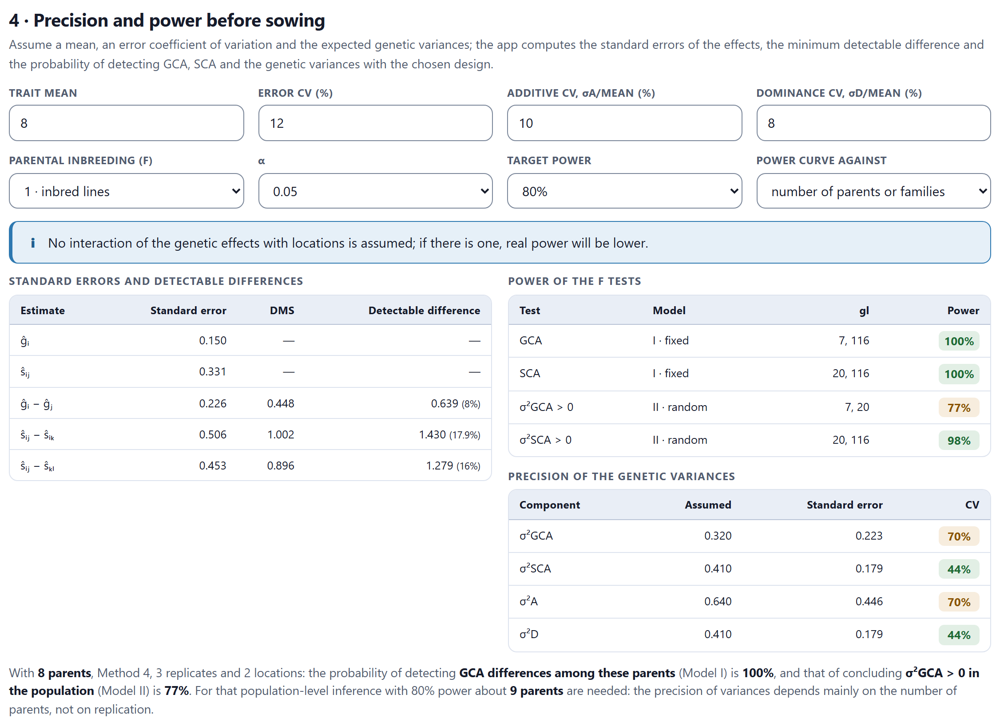
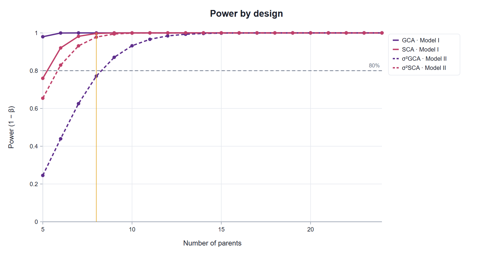
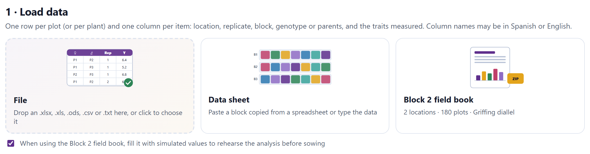

Before the first pollination is made, it pays to know how many crosses must be made, how much seed will be needed, how the trial will be laid out in the field and whether the experiment will have the power needed to answer the question. Block 2 settles all four and delivers the field book that Block 3 will read later.
Block 2 is worked from top to bottom in four cards. Each one takes what the previous one defined, and everything is recomputed at once: if you change the number of parents, the crosses, the seed, the field map and the power change with it.
The same example is used throughout the chapter: a diallel of eight maize lines, L1 to L8, with Griffing’s Method 4 (F1 crosses only), two commercial checks, three replicates and two locations, in an α-lattice. Every number quoted comes from the app with those settings and with its default random seed, 2026.
The card 1 · Mating design opens with eleven tiles, one per design, each with its own illustration. Choosing one brings up the inputs that design needs: the list of parents, the number of males and females, the two parents of a cross or the generations. Below, four tiles summarize the plan: parents or individuals, crosses to make, entries to evaluate and growing seasons up to the evaluation.
| Design | What is crossed | Entries | Blocks |
|---|---|---|---|
| Griffing 1 | Every pair in both directions, plus the parents | p² | 4 5 |
| Griffing 2 | Every pair once, plus the parents | p(p + 1)/2 | 4 5 |
| Griffing 3 | Every pair in both directions, without the parents | p(p − 1) | 4 |
| Griffing 4 | Every pair once, without the parents | p(p − 1)/2 | 4 |
| Partial diallel | Each parent with s of the others, in a circulant scheme | ps/2 | 6 |
| North Carolina I | Each male with f females of its own, different from those of the other males | c·m·f | 6 |
| North Carolina II | Every male with every female of its set | c·m·f | 6 |
| North Carolina III | Each F2 plant as male with P1 and with P2 | 2n | 6 |
| Triple test cross | Each F2 plant or line as male with P1, P2 and F1 | 3n | 6 |
| Line × tester | Each line (female) with each tester (male) | l·t | 6 |
| Generations | P1, P2, F1, F2, BC1 = F1 × P1 and BC2 = F1 × P2; optionally the reciprocal F1, the F3 and the selfed backcrosses | one per generation | 7 |
The partial diallel, the North Carolina III and the triple test cross can add the parents (and the F1) as entries; the line × tester adds the lines and testers by default; and any design accepts checks, which are typed separated by commas and are evaluated as one more entry. Parent names are free; if the list is left empty, the app uses generic names (P1, P2… or L1, L2…) and the number you give. When you type names, that number adjusts itself to the count typed and is locked.

Every cross is written female × male. In diallels, the direct F1 crosses go above the diagonal (the female is the row) and the reciprocals below, as in Griffing (1956b). In the North Carolina III and the triple test cross, the testers P1, P2 and F1 are the females and each F2 plant supplies the pollen. In the line × tester, the lines are the females. Repeated names are ignored with a warning, because the following blocks identify each entry by its name.
Below the tiles there are two editable figures. The crossing plan is the female × male table with each cross colored by type (parent, direct F1, reciprocal, full-sib family, backcross to each tester); for generations it is replaced by a diagram of the origin of each generation with its plants. The calendar by growing season spreads the work over growing seasons, from the crossing block to the evaluation.


| Design | Seasons | Total |
|---|---|---|
| Diallels, partial and line × tester | Crossing block (with selfing of the parents and staggered sowings if they do not flower together) · evaluation | 2 |
| North Carolina I and II | Crossing block, with every plant labeled · evaluation, one experiment per set | 2 |
| North Carolina III and triple test cross | Produce the F1 · produce the F2 · test crosses, each male with all its testers on the same day · evaluation | 4 |
| Generations | Produce the F1 · segregating generations, remaking the F1 and increasing P1 and P2 · (third generation, if requested) · joint evaluation of all of them | 3 or 4 |
The full list of crosses and entries is folded at the end of the card, in List of crosses and entries, with the number, code, female, male and type of each one, and it is downloaded with ⬇ CSV.
In the generations design each generation is evaluated with a number of plants. The segregating generations vary more than the parents and the F1, so with the same number of plants their means are more or less precise according to their variance. The button Share out to equalise precision distributes a total of plants in proportion to the expected variance of each generation, so that all means have the same standard error (Kearsey, 1980).
With the default values (600 plants, H² = 0.5 in the F2 and (H/D)½ = 0.8) the allocation is 73 plants of each parent and of the F1, 146 of F2 and 118 of each backcross, and the standard errors of the six means fall between 0.079 and 0.080. With the initial allocation of 30 and 100 plants they ranged from 0.086 to 0.124 (Section 2.7).
The card 2 · Seed and pollinations answers three questions about the crossing block: how much seed each entry needs for the whole trial, how many pollinations must be made and how many plants of each parent must be sown. The menu Crop fills the fields with guide values (Table 2.4) that you can correct with those of your own program.

Everything is rounded up. In the generations design the seed comes from the plants of each generation times the number of locations, with the same margin. The self-pollinations are those that provide the seed of the parents that are evaluated; in Methods 3 and 4 there are none, because the parents do not enter the trial.
In the example, each entry needs 40 × 3 × 2 × 1.3 = 312 seeds; with 250 seeds per pollination and 70% success, each pollination yields 175, so two pollinations are made per cross: 56 in all for the 28 crosses. With one ear per plant and four pollinations per male plant, the crossing block needs 56 female plants and 16 male plants.
In Methods 2 and 4 the app writes each cross with the parent that comes first in the list as the female. In the example, L1 is the female in its seven crosses (14 female plants and no male ones) and L8 is the male in all of them (4 male plants). Since these methods assume there are no reciprocal effects, you can reverse some crosses in the crossing block to share out the work; keep the entry code as it is in the field book.
| Field | Initial | What it is |
|---|---|---|
| Replicates · Locations | 3 · 2 | Those of the whole block: cards 3 and 4 use them too |
| Seeds per plot | 40 | Seeds sown in each plot |
| Safety margin (%) | 30 | Extra seed, for resowing and losses |
| Seeds per pollination | 250 | Seed produced by one successful pollination |
| Successful pollinations (%) | 70 | Fraction of pollinations that set seed |
| Female units per plant | 1 | Ears, heads or flowers that can be pollinated on one plant |
| Pollinations per male plant | 4 | Pollinations the pollen of one plant can make |
| Crop | Seeds per pollination | Female units per plant | Pollinations per male plant | Seeds per plot |
|---|---|---|---|---|
| Maize | 250 | 1 | 4 | 40 |
| Sorghum | 400 | 1 | 3 | 80 |
| Wheat | 30 | 3 | 5 | 300 |
| Rice | 20 | 3 | 6 | 200 |
| Common bean | 4 | 10 | 10 | 40 |
| Tomato | 60 | 8 | 10 | 20 |
| Pepper | 40 | 8 | 10 | 20 |
| Squash | 200 | 2 | 3 | 10 |
| Sunflower | 300 | 1 | 3 | 30 |
| Cotton | 25 | 10 | 10 | 40 |
In the North Carolina I and III, in the triple test cross and in the North Carolina II with plants from a population, each parent is a plant that cannot be multiplied. The card compares what is asked of it with what it can give and warns when it is not enough. In the North Carolina II with its initial values (three sets of 4 × 4), each male must supply pollen for 8 pollinations, more than the 4 assumed, and each female needs 8 pollinations with a single ear. The app suggests reducing the seed per plot, staggering the sowing of the females, using several tassels or flowers per plant or, in the II, using as females lines or clones that can be multiplied.
The card 3 · Field trial design randomizes the entries at each location and draws the field map. The randomization is reproducible: it starts from the Random seed, which is written in the field book, and each location receives its own randomization derived from it. The button ↻ draws another seed.
| Design | How it is built | Error degrees of freedom |
|---|---|---|
| Randomised complete blocks | Each replicate is a block with all the entries | (r − 1)(v − 1) |
| Alpha lattice (incomplete blocks) | Each replicate is divided into s blocks of k plots (Patterson and Williams, 1976) | vr − 1 − (v − 1) − (r − 1) − r(s − 1) |
| Completely randomised | All the plots are randomized together | v(r − 1) |
| Augmented (repeated checks) | The checks in every block; the new entries only once (Federer, 1956) | (b − 1)(c − 1) |
| If there are few entries (up to 15 or 20) and the land is uniform over the size of a replicate… | then randomized complete blocks. |
| If there are many entries and a full replicate no longer fits on homogeneous soil… | then α-lattice, with blocks of a size close to √v. |
| If there are many new entries and seed for a single plot of each… | then augmented, with at least two checks and 12 or more error degrees of freedom. |
| If the plots are pots or homogeneous units (greenhouse, laboratory)… | then completely randomized. |
The app requires at least two replicates, except in the augmented design, and warns when the error is left with fewer than 12 degrees of freedom.
When the lattice is chosen, the app proposes a block size k close to √v; with 30 entries it proposes 5, that is, six blocks per replicate. If v is not a multiple of k, the blocks come in two sizes that differ by one plot.
When the number of blocks per replicate s is prime and r ≤ s and k ≤ s, a cyclic array gives an α(0,1) design, in which no pair of entries shares a block more than once: with 25 entries in blocks of 5, or 49 in blocks of 7, it reaches the highest efficiency possible. In the other cases, the app generates candidates from random generating arrays and with an exchange algorithm that spreads the concurrences among pairs, picks the one with the highest efficiency factor E and, up to 100 entries, polishes it with exchanges that raise E directly.
E compares the variance of the differences between entries with what a complete-block design with the same error would have: E = 0.785 means that the information lost by using incomplete blocks amounts to 21.5%. Next to E, the app shows its upper bound for resolvable designs and the maximum concurrence, the largest number of times a pair of entries shares a block.

| k | Blocks per replicate | E | Upper bound | Maximum concurrence | Error df |
|---|---|---|---|---|---|
| 3 | 10 | 0.591 | 0.682 | 1 | 31 |
| 5 | 6 | 0.785 | 0.795 | 1 | 43 |
| 6 | 5 | 0.823 | 0.829 | 2 | 46 |
| 10 | 3 | 0.905 | 0.906 | 3 | 52 |
| 30 | 1 (complete blocks) | 1 | — | — | 58 |
E rises with block size and reaches 1 with complete blocks, because it compares with a design that has the same error. But the purpose of small blocks is a smaller error, because each block occupies a more uniform patch of land. Choose k by the size of the homogeneous land and use E to compare designs with the same k. Nor is the upper bound always reached: with blocks of three plots, several seeds give E between 0.591 and 0.592, far from 0.682, because no design attains it.
| Field | What it does |
|---|---|
| Plots per field row | 0 puts each block in one row; any other number splits the blocks into rows of that length. |
| Replicates in the field | one below the other or side by side, with an alley one plot wide between them. |
| Plot numbering | serpentine (each row in the opposite direction to the previous one, the way the field is walked), row by row or replicate × 100 + plot (101, 102… or ×1000 if a replicate has 100 or more plots). |
| Locations | Their names, separated by commas; their number comes from card 2. |
| Rows per plot, Row length (m), Row spacing (m) | They compute the area: plots × rows × length × spacing, without alleys or borders. In the example, 90 × 2 × 5 × 0.8 = 720 m² per location. |
| Traits to record | Names separated by commas; each one will be an empty column of the field book. |
The field map is drawn for one location at a time; if there are several, a menu switches between them. The figure editor colors the plots by entry type or by replicate and shows or hides the entry codes and the plot numbers. When the plan is small, the map is redrawn by itself whenever the plan changes; if it is large (more than 2,500 plots, or an α-lattice with more than 200 entries), the app asks you to press Generate map and field book.

Below the map is the field book: one row per plot for all locations, ready to be printed or to take the data. It has eleven fixed columns and one more, empty, for each trait typed in the card. The view shows the first 60 rows; the downloads include them all.
| Location | Plot | Replicate | Block | Row | Column | Entry | Genotype | Female | Male | Type | Yield | Male flowering | Plant height |
|---|---|---|---|---|---|---|---|---|---|---|---|---|---|
| Location 1 | 1 | 1 | 1 | 1 | 1 | 22 | L4 × L8 | L4 | L8 | F₁ (direct) | |||
| Location 1 | 2 | 1 | 1 | 1 | 2 | 8 | L2 × L3 | L2 | L3 | F₁ (direct) | |||
| Location 1 | 3 | 1 | 1 | 1 | 3 | 28 | L7 × L8 | L7 | L8 | F₁ (direct) | |||
| Location 1 | 4 | 1 | 1 | 1 | 4 | 17 | L3 × L7 | L3 | L7 | F₁ (direct) | |||
| Location 1 | 5 | 1 | 1 | 1 | 5 | 11 | L2 × L6 | L2 | L6 | F₁ (direct) | |||
| Location 1 | 6 | 2 | 1 | 1 | 7 | 15 | L3 × L5 | L3 | L5 | F₁ (direct) | |||
| … |
Plot 6 already belongs to replicate 2 and lies in column 7: with the replicates side by side, the first field row crosses the three replicates, and column 6 is the alley between them.
With the checkbox Include the line that describes the design ticked, the first line of both files declares the plan. In the example it reads:
#BreedingPro fieldbook, mating=griffing, method=4, field=alpha, reps=3, k=5, locations=2, entries=30, seed=2026, F=1
Block 3 reads from that line the mating design, the method and the field design, so it does not have to guess them; the rest stays as a record. Enter the data in the empty columns without changing the names of the fixed columns.
The last card answers the question that is too often asked too late: with this size of experiment, will I be able to detect what matters to me? It is enough to assume a mean, the coefficient of variation of the error and the size of the genetic variances; the app computes everything from the expected mean squares of the balanced analysis, before a single datum exists.
| Field | Initial | What it is |
|---|---|---|
| Trait mean | 8 | In the units of the trait; for example, t/ha of grain |
| Error CV (%) | 12 | Coefficient of variation of the plot error that the trait usually has |
| Additive CV, σA/mean (%) | 10 | Size of the expected additive variation, relative to the mean |
| Dominance CV, σD/mean (%) | 8 | The same for dominance |
| Parental inbreeding (F) | 1 | 1 for lines; 0.875, 0.75 or 0.5 for S3, S2 or S1; 0 for non-inbred plants |
| α · Target power | 0.05 · 80% | Significance level and power sought |
| Power curve against | parents | Number of parents (or families) or number of replicates |
In Model I the power of each F test comes from the noncentral F distribution; in Model II, from the central F scaled by the ratio of the expected mean squares. The precision of the genetic variances is computed from the sampling variance of the moment estimators. No interaction of the genetic effects with locations is assumed; if there is one, the real power will be lower, and the app recalls this in a message.
With the initial values, σ²A = 0.64 and σ²D = 0.41; since the lines have F = 1, σ²GCA = 0.32 and σ²SCA = 0.41.
| Design | Precision | Power |
|---|---|---|
| Griffing’s methods | SE of ĝi, ŝii, ŝij and r̂ij and of their differences; LSD and detectable difference; SE and CV of σ²GCA, σ²SCA, σ²A and σ²D | GCA and SCA in Models I and II; in Method 1 that of Model II is approximate |
| Partial diallel | SE of ĝi − ĝj according to the distance between the parents in the circle | GCA and SCA, Models I and II |
| Line × tester | Exact SE of the GCA of lines and testers and of the SCA, next to the conventional ones | Lines, testers and lines × testers, Models I and II |
| North Carolina designs and triple test cross | SE and CV of σ²A and σ²D | The tests of the design components (random model) |
| Generations | SE of the mean of each generation with its plants | — |

The text below sums it up and computes how many parents would be needed for population-level inference: about 9.

If you choose the number of replicates in the menu Power curve against, you will see that going from 3 to 8 replicates only raises the power for σ²GCA from 77 to 83%, while one more parent takes it to 87% and two more to 93%. The precision of the variances depends above all on the number of parents, because they, not the plots, are the sample of the population.
The initial values of each design are enough to see how they differ. All the following cases use three replicates, two locations and the initial assumptions of card 4.
| Design | Entries | Power of the tests | CV of σ²A | CV of σ²D |
|---|---|---|---|---|
| North Carolina I | 48 | males 58%; females within males 98% | 79% | 171% |
| North Carolina II | 48 | males 75%; females 75%; males × females 58% | 48% | 69% |
| North Carolina III | 60 | F2 plants 99%; F2 × testers 100% | 39% | 36% |
With the same number of entries, the II estimates σ²A and σ²D much more precisely than the I, in which σ²D is obtained by difference and its CV exceeds 170%. The III, designed for the average degree of dominance, estimates both variances with similar precision, and the app says so in its text. Remember that these variances are estimated in a single environment; the app warns that, if locations are averaged without modeling the interaction, σ²A and σ²D are inflated by σ²GE.
With 20 lines, 2 testers and the lines and testers as entries, there are 40 crosses and 62 entries. The standard errors of the effects used by the app include the factors (l − 1)/l and (t − 1)/t; the conventional ones omit them and overstate the uncertainty, above all when there are few testers.
| Estimate | Exact SE | Conventional SE |
|---|---|---|
| ĝ of a line | 0.270 | 0.277 |
| ĝ of a tester | 0.062 | 0.088 |
| ŝij | 0.270 | 0.392 |
| ŝij − ŝkj (same tester) | 0.392 | 0.554 |
In Model II, on the other hand, the power for σ²GCA of lines is only 49%, because it is tested against the interaction with 19 degrees of freedom. The app explains it: with two testers, each line’s GCA is averaged over two crosses, and more testers of different genetic background give a more general GCA.
With 10 parents and s = 5, 25 crosses are made instead of 45. The GCA of each parent is estimated from five crosses, and the precision of a difference ĝi − ĝj depends on how far apart the two parents are in the circle: its standard error goes from 0.256, for neighbors, to 0.324, for opposite ones. The power for GCA in Model I is 100%, and for σ²GCA in Model II, 67%.
| Generation | Initial plants | SE | Plants shared out | SE |
|---|---|---|---|---|
| P1, P2, F1 | 30 | 0.124 | 73 | 0.079 |
| F2 | 100 | 0.096 | 146 | 0.079 |
| BC1, BC2 | 100 | 0.086 | 118 | 0.080 |
The scaling tests compare combinations of means and gain precision when all of them have similar standard errors; that is why, in this design, card 4 shows this table instead of the power. With six entries and three replicates, the error has only 10 degrees of freedom per location (the app marks it in amber); a fourth replicate raises them to 15.
The button Continue: Data → at the end of the block leads to Block 3. There, the load card has a tile Block 2 field book that shows a summary of the current plan; in the example, 2 locations, 180 plots and a Griffing diallel. There are two ways to use it.

Like the rest of the app, Block 2 keeps nothing when the page is reloaded: download the workbook, which also keeps the random seed to regenerate the same field map.